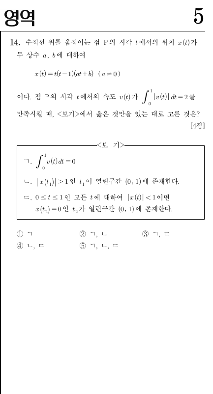

2022학년도 수능 공통 14번 · 객관식 4점 · 정답 ③
실제 수능 문제지다. "속도의 적분"이 두 가지 얼굴을 가졌음을 보는 문제다.

* 원문제: 수직선 위를 움직이는 점 P의 시각 \(t\)에서의 위치 \(x(t)\)가 두 상수 \(a,b\)에 대하여 \(x(t)=t(t-1)(at+b)\ (a\ne 0)\)이다. 점 P의 시각 \(t\)에서의 속도 \(v(t)\)가 \(\int_0^1|v(t)|dt=2\)를 만족시킬 때, <보기>에서 옳은 것만을 있는 대로 고른 것은? [4점]
<보기> ㄱ. \(\int_0^1v(t)dt=0\) ㄴ. \(|x(t_1)|>1\)인 \(t_1\)이 열린구간 \((0,1)\)에 존재한다. ㄷ. \(0\le t\le 1\)인 모든 \(t\)에 대하여 \(|x(t)|<1\)이면 \(x(t_2)=0\)인 \(t_2\)가 열린구간 \((0,1)\)에 존재한다.
① ㄱ ② ㄱ, ㄴ ③ ㄱ, ㄷ ④ ㄴ, ㄷ ⑤ ㄱ, ㄴ, ㄷ
\(\int_0^1 v(t)\,dt\)는 "위치의 변화"(어디에서 어디로 갔나)이고, \(\int_0^1|v(t)|\,dt\)는 "움직인 거리"(얼마나 돌아다녔나)다. 둘이 다르면, 점 P는 방향을 바꾼 것이다. 이 한 줄이 보기 ㄴ, ㄷ의 열쇠다.
미적분의 기본정리는 "계산하라"가 아니라 "읽으라"는 신호다.
\(x(t)=t(t-1)(at+b)\)에서 \(x(0)=0\), \(x(1)=1\cdot 0\cdot(a+b)=0\). 따라서:
ㄱ은 참. \(v(t)\)를 미분해서 적분할 필요가 전혀 없다. 시작점과 끝점이 같으면 위치 변화는 0이다.
Q1. \(\int_0^1 v(t)dt=0\)인 이유를 한 마디로?
정답! 미적분의 기본정리: 속도의 적분은 위치의 변화다. 시작=끝이면 0이다.
\(v(t)\)는 \(x(t)\)의 도함수다. \(\int_0^1 x'(t)dt\)는 무엇과 같은가?
\(\int|v|=2\)와 \(\int v=0\)이 동시에 말하는 것.
만약 \(v(t)\ge 0\)이 항상 성립하면 \(\int_0^1|v(t)|dt=\int_0^1v(t)dt=0\)이 되어 조건 \(\int|v|=2\)에 모순. \(v(t)\le 0\)이 항상 성립해도 마찬가지다.
따라서 \(v(t)\)는 \((0,1)\)에서 부호를 바꾼다. 즉 점 P는 방향을 바꾸고, \(x(t)\)는 \((0,1)\) 안에서 극대 또는 극소를 갖는다.
Q2. \(\int|v|=2\)이면서 \(\int v=0\)일 때, \(v\)에 대해 확실한 것은?
정답! 부호가 안 바뀌면 \(\int|v|=|\int v|\)가 되어 2=0이라는 모순이 생긴다.
\(v\ge 0\)이면 \(|v|=v\)이므로 \(\int|v|=\int v=0\)이다. 조건과 맞는가?
\(a,b\)를 움직이며 \(x(t)\)의 그래프와 "움직인 거리"를 관찰하자.
\(y=x(t)\) (위치)\(y=v(t)\) (속도)
관찰 1 \(x(0)=x(1)=0\)은 \(a,b\)와 무관하게 항상 성립한다. 그래서 \(\int_0^1v=0\)도 항상이다.
관찰 2 \(\int_0^1|v(t)|dt\) 값을 보자. 이 값이 2가 되려면 \(x(t)\)의 "혹"이 얼마나 커야 하는가?
관찰 3 \(v(t)\)가 부호를 바꾸는 점(속도 0)에서 \(x(t)\)는 극값을 갖는다. 방향 전환점이다.
"~이면"은 대우 "~가 아니면"으로 뒤집어보자.
ㄷ은 "\(P \Rightarrow Q\)" 꼴이다 (\(P\): \(|x(t)|<1\), \(Q\): \((0,1)\) 안에 \(x\)의 근 존재). 대우는 "\(\lnot Q \Rightarrow \lnot P\)":
"\((0,1)\) 안에 \(x(t)=0\)인 점이 없으면, \(|x(t_0)|\ge 1\)인 \(t_0\)가 존재한다."
\(x(t)=t(t-1)(at+b)\)의 근은 \(t=0,1,-b/a\)다. \((0,1)\) 안에 근이 없다는 것은 \(-b/a\notin(0,1)\)이라는 뜻. 이때 \(x(t)\)는 \((0,1)\)에서 부호가 안 바뀌고, \(x(0)=x(1)=0\)이므로 혹이 하나인 모양이다 (올라갔다 내려오거나, 내려갔다 올라오거나).
혹이 하나면 움직인 거리는 \(2\times|\)극값\(|\)이다. 조건에서 움직인 거리가 2이므로:
즉 \(|x(t_0)|=1\)인 점이 존재한다. \(\lnot P\)가 성립한다. ㄷ은 참.
Q3. ㄷ의 대우를 올바르게 쓴 것은?
정답! "\(P\Rightarrow Q\)"의 대우는 "\(\lnot Q\Rightarrow\lnot P\)"다. 조건문을 뒤집는 것이 이 문제의 열쇠다.
\(P\): \(|x|<1\), \(Q\): 근 존재. 대우는 "근이 없으면 \(|x|\ge 1\)인 점이 있다"다.
"존재한다"는 전칭이 아니라 특칭. 깨뜨리려면 예시 하나.
ㄴ은 "모든 조건 만족 \((a,b)\)에 대해 \(|x(t_1)|>1\)인 \(t_1\)이 존재한다"는 주장이다. 이를 반박하려면 조건은 만족하지만 \(|x(t)|\le 1\)인 예시 하나면 된다.
STEP 3에서 본 "혹 하나, 극값 \(=1\)"인 경우가 바로 그 예시다. 예컨대 극댓값이 정확히 1인 \((a,b)\)에서는 \(\int|v|=2\)를 만족하면서도 \(|x(t)|>1\)인 점이 없다.
ㄴ은 거짓.
Q4. ㄴ이 거짓임을 보이는 방법은?
정답! "존재한다"는 주장을 깨뜨리려면 반례 하나면 충분하다. 혹의 높이가 정확히 1인 경우가 그 예시다.
"모든 경우에 존재한다"를 부정하려면? 하나의 반례면 된다.
ㄱ 참, ㄴ 거짓, ㄷ 참 → ③ ㄱ, ㄷ
정답 ③